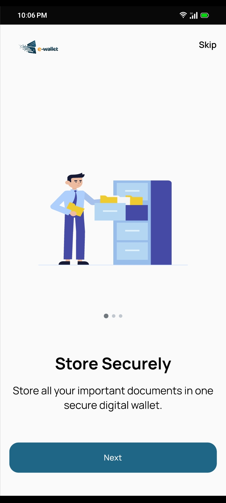
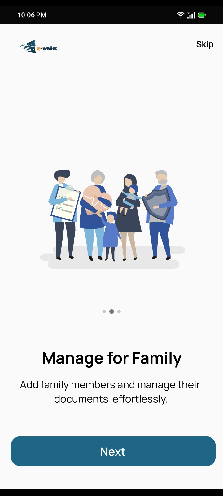
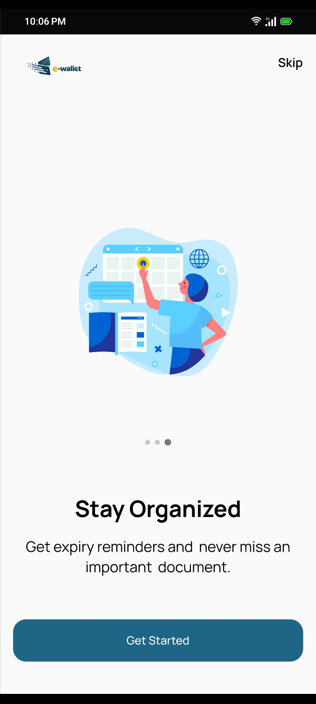
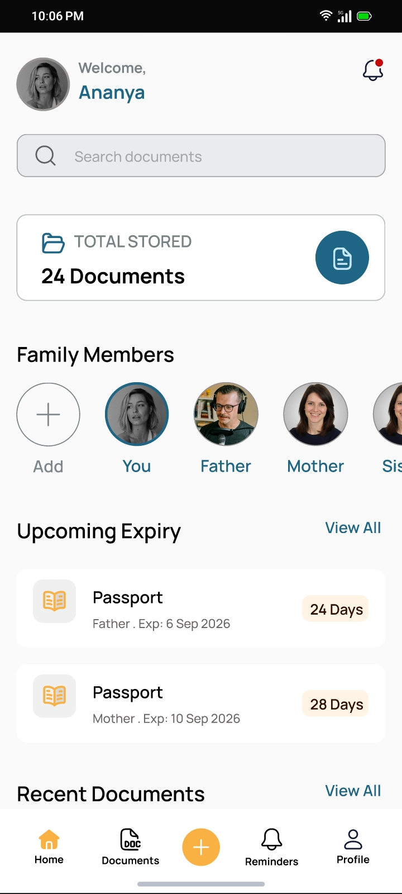
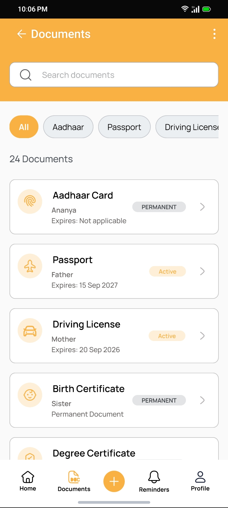
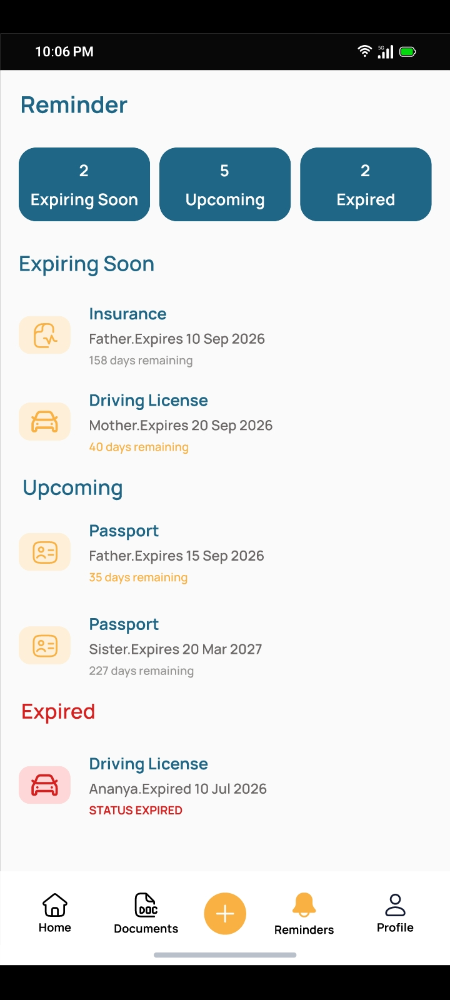
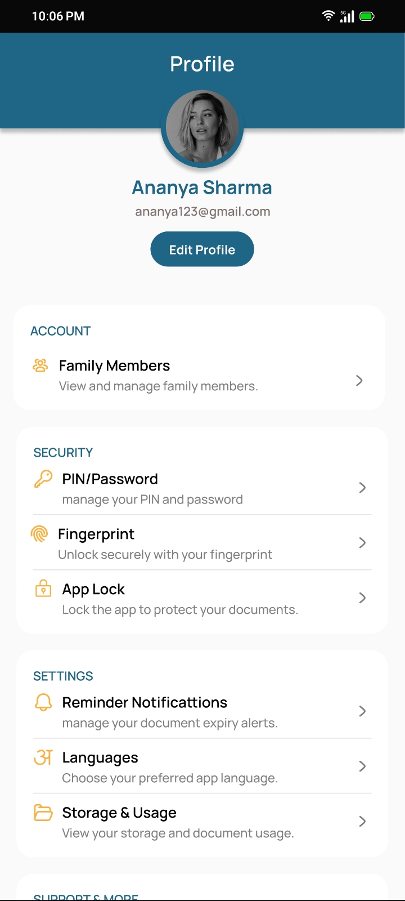
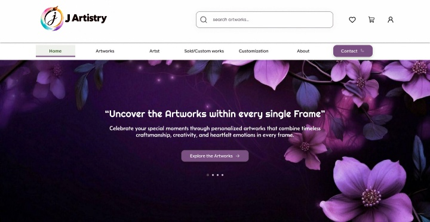
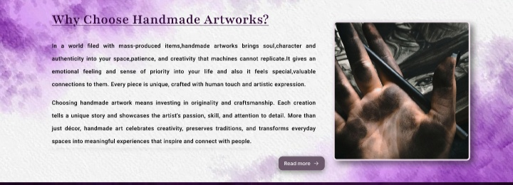

Onboarding Screens
Designed a simple onboarding experience to introduce users to the Family Digital Document Wallet and highlight its key benefits before they start using the app.



Aspiring UI/UX Designer
I create clean, intuitive and visually engaging digital experiences that make products easier and more enjoyable to use.
I’m Jayalakshmi, a BCA graduate and aspiring UI/UX Designer with a passion for creating simple, intuitive, and visually engaging digital experiences.
I enjoy exploring ideas, designing user-friendly interfaces, and paying attention to details such as layout, typography, color, and usability.
I’m currently building my UI/UX skills through hands-on projects, including a Family Digital Document Wallet and JArtistry. I’m eager to begin my career in UI/UX design, learn from real-world experiences, and grow as a designer.
User flows, wireframes and intuitive interface design.
Modern, responsive and visually engaging website designs.
Interactive prototypes that communicate product ideas clearly.
Posters, layouts, typography and visual communication.
Mobile App • UI/UX Case Study
Family Digital Document Wallet is an ongoing mobile app concept designed to help families store, organize, and manage important digital documents in one secure place. Users can manage documents for different family members, organize them by categories, view document details, and receive expiry reminders for important documents. The design focuses on making document management simple, organized, and easy to access.
Designed a simple onboarding experience to introduce users to the Family Digital Document Wallet and highlight its key benefits before they start using the app.



Designed a clear and organized dashboard that gives users a quick overview of their family documents, storage, recent documents, and upcoming expiry reminders, while providing easy access to key features.

Designed a centralized document management screen that gives users a clear overview of their family documents, making it easy to browse, search, filter, and access documents by category. The organized layout helps users quickly find the document they need while keeping all important documents structured in one place.

Designed a simple family members screen that displays all added family members in an organized list. Each member has a clear selection arrow, allowing users to easily choose a person and access their associated documents.

Designed a reminder screen that provides a clear overview of document expiry status, with separate sections for Expiring Soon, Upcoming, and Expired documents. Each section displays the total number of documents and includes an arrow for quick access to the respective list.

Designed a simple profile screen that gives users easy access to their account information and important app settings, including family members, PIN/password, fingerprint, and AppLock security options. The organized layout keeps personal and security settings easy to find and manage.

JArtistry is an ongoing website project designed for a single artist to showcase and share their artwork with visitors. The website allows users to explore different artworks, engage with the artist’s work through likes and comments, and request customized artworks such as Nettippattam and charcoal drawings. The design focuses on creating a visually engaging experience while making artwork discovery and interaction simple and enjoyable.
Designed a simple and clean homepage with clear navigation, a search bar, and essential links. The hero section introduces the artist with a welcoming heading and description, along with an “Explore Artworks” button that guides users to discover the artist’s work.

Handmade artworks bring a unique blend of creativity, craftsmanship, and personal expression. Each piece is thoughtfully created by the artist, making it special, authentic, and different from mass-produced artwork.

Designed an Explore Artworks page that showcases different types of artworks through names and reference images. The page also shows customization options specifically for charcoal drawings and Nettippattam, allowing visitors to request personalized versions of these artworks though it.